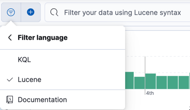

Lucene query syntax
editLucene query syntax
editLucene query syntax is available to Kibana users who opt out of the Kibana Query Language. Full documentation for this syntax is available as part of Elasticsearch query string syntax.
The main reason to use the Lucene query syntax in Kibana is for advanced Lucene features, such as regular expressions or fuzzy term matching. However, Lucene syntax is not able to search nested objects or scripted fields.
To use the Lucene syntax, open the Saved query menu, and then select Language: KQL > Lucene.

To perform a free text search, simply enter a text string. For example, if
you’re searching web server logs, you could enter safari to search all
fields:
safari
To search for a value in a specific field, prefix the value with the name of the field:
status:200
To search for a range of values, use the bracketed range syntax,
[START_VALUE TO END_VALUE]. For example, to find entries that have 4xx
status codes, you could enter status:[400 TO 499].
status:[400 TO 499]
For an open range, use a wildcard:
status:[400 TO *]
To specify more complex search criteria, use the boolean operators
AND, OR, and NOT. For example, to find entries that have 4xx status
codes and have an extension of php or html:
status:[400 TO 499] AND (extension:php OR extension:html)